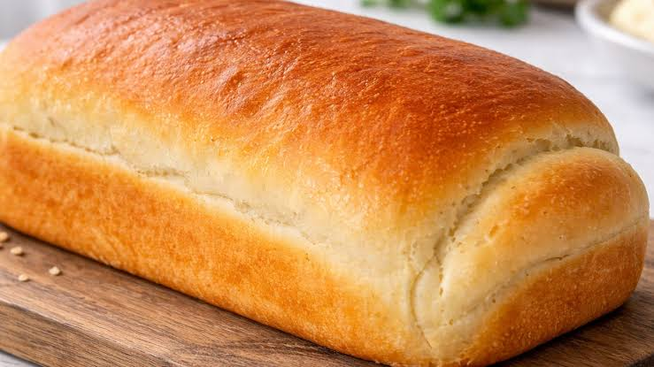

Homemade Bread
Ingredients:
- 8 cups of all-purpose flour (about 2.2 pounds)
- 2 packets (14 g / ½ oz) of active dry yeast
- 1 tablespoon of salt
- 1 cup of warm water
- 5 tablespoons of sugar
- 1 egg
- ½ cup of oil
Instructions:
In a large bowl, mix all of the "dry" ingredients (flour, yeast, salt, and sugar). Make a small hole in the middle and add the egg, the water and the oil. Mix until a smooth dough forms. Knead the dough thoroughly so it becomes nice and fluffy when baked. Split the dough into 4 portions, open and enroll each portion into a loaf shape, and let it grow for 1 hour. Take the loaves to the oven for 30 minutes or until golden brown.
Expected Result:
